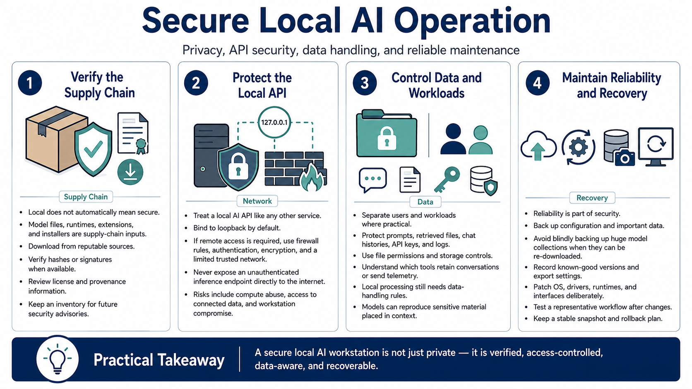

Security, Privacy, and Reliability
Connecting to LMS... Progress: in progress

Narration
Local operation can improve privacy, but local does not automatically mean secure. Model files, runtime packages, extensions, and installers are software supply-chain inputs. Obtain them from reputable sources, verify hashes or signatures when available, review license and provenance information, and avoid executing unfamiliar model packages that require custom code. Keep an inventory so an affected component can be identified when a security advisory appears.
Treat a local AI API like any other service. Bind it to the loopback interface unless another system genuinely needs access. If network access is required, use host firewall rules, authentication, encryption, and a limited trusted network. Do not expose an unauthenticated inference endpoint directly to the internet. An attacker could consume compute resources, access connected data sources, or use the service as an entry point into the workstation.
Separate users and workloads where practical. Protect sensitive prompts, retrieved documents, chat histories, API keys, and logs with appropriate file permissions and storage controls. Understand which applications retain conversations and whether telemetry leaves the machine. A model can reproduce sensitive material supplied in its context, so local processing does not remove the need for data handling rules.
Reliability is part of security. Back up configuration files and important data, but avoid backing up huge model collections blindly when they can be re-downloaded. Record known-good versions and export settings before major changes. Apply operating system, driver, runtime, and interface patches deliberately, then test a representative workflow. A stable configuration snapshot and a rollback plan allow experimentation without turning every update into a recovery exercise.